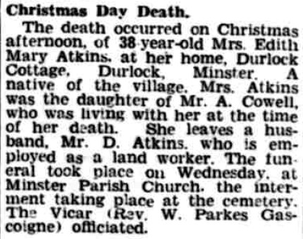
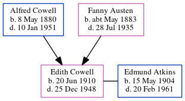

Edith Mary Atkins (née Cowell) 1910 - 1948
[ Home ] | [ Calendar ] | [ Surnames Index ] | [ Errors ] | [ Family History ]The child of Alfred Cowell (a transport driver) and Fanny Austen, Edith Cowell, the first cousin once-removed on the mother's side of Nigel Horne, was born in Stourmouth, Kent, England on 20 Jun 19101,2,3 and baptised there at All Saints on 4 Sept 1910. She married Edmund Atkins at St Mary the Virgin Church, Minster, Thanet, Kent, England on 4 Jun 19325.
During her life, she was living at Brewery Cottages, Upper Stourmouth, Kent on 2 Apr 19116; at Durlock Farm Cottages, Minster in Thanet on 19 Jun 19217; and at Kent and Canterbury Hospital, Ethelbert Road, Canterbury, Kent on 29 Sept 1939.
She died on 25 Dec 1948 at Durlock Cottage, Minster in Thanet2,4.
Parents
- Alfred John was born on 8 May 1880
- Fanny was born c. May 1883
Citations
- 1911 England Census Online publication - Provo, UT, USA: Ancestry.com Operations, Inc., 2011.Original data - Census Returns of England and Wales, 1911. Kew, Surrey, England: The National Archives of the UK (TNA), 1911. Data imaged from the National Archives, London, England.
- England & Wales, Death Index: 1984-2005 Online publication - Provo, UT, USA: The Generations Network, Inc., 2007.Original data - General Register Office. England and Wales Civil Registration Indexes. London, England: General Register Office. © Crown copyright. Published by permission of the Cont
- England & Wales, FreeBMD Birth Index, 1837-1915 Online publication - Provo, UT, USA: The Generations Network, Inc., 2006.Original data - General Register Office. England and Wales Civil Registration Indexes. London, England: General Register Office. © Crown copyright. Published by permission of the Cont
- England & Wales deaths 1837-2007 - Findmypast
- England & Wales Marriages 1837-2005 - Findmypast
- 1911 Census for England & Wales - Findmypast (was age 0 and the daughter of the head of the household)
- 1921 Census Of England & Wales - Findmypast (was age 11 and the daughter of the head of the household)
Media
Double Wedding

East Kent Times and Mail - 1 Jan 1949

England & Wales births 1837-2006 - BMD/B/1910/3/AG/000314/087
England & Wales deaths 1837-2007 - BMD/D/1948/4/AZ/000025/022
1939 Register Transcription - TNA-R39-1680-1680H-006-09
1911 England, Wales & Scotland Census Transcription - GBC-1911-RG14-04559-0401-3
1911 England, Wales & Scotland Census Transcription - GBC-1911-RG14-04559-0401-4
Kent Baptisms - GBPRS/CANT/B/96716794
Family Tree
Map
Generated by ged2site. Last updated on Jul 3, 2024
Known Issues
Residence record for 29 Sep 1939 contains no citation
Location for 2 Apr 1911 (Brewery Cottages, Upper Stourmouth, Kent, England) differs from mother's (Elmstone, Stourmouth, Kent, England)